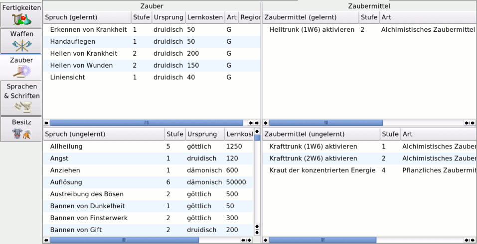

MAGUS - Hilfe
|
Bedienung |
||||||||||
Zauber |
|||||||||||
| Zum Seitenanfang | |||||||||||
Notebook Zauber |
|||||||||||
| Zum Seitenanfang | |||||||||||
AllgemeinAuf dieser Notebookseite werden Zauber und Zaubermittel erlernt. Hierzu ist die Seite vertikal unterteilt. die beiden linken Fenster dienen zum Erlernen von Zaubern. Auf der rechten Seite befinden sich zwei Fenster zum Erwerb von Zaubermitteln:Zusätzlich zu den Standardbuttons, stehen für das Erlernen von Zaubern weitere Buttons zur Verfügung. |
|||||||||||
| Zum Seitenanfang | |||||||||||
Buttons
|
|||||||||||
| Zum Seitenanfang | |||||||||||
Zauber Im unteren Fenster werden alle Zauber angezeigt, die der Abenteurer erlernen kann. Neben den erforderlichen "Lernkosten" werden die "Stufe des Zaubers", der "Ursprung", die Art (A = Ausnahme-, S = Standard-, G = Grundfertigkeit) und die "Region" angezeigt. Durch einmaliges(!) Anklicken des zu erlernenden Zaubers wird dieser gelernt und in das obere Fenster übertragen. Das obere Fenster zeigt die erlernten Zauber. Die Angegebenen Lernkosten werden beim "Verlernen" als AEP gutgeschrieben. Anmerkung: Die Möglichkeit zum Reduzieren und Verlernen von Zaubern dient in erster Line dazu, Fehleingaben zu korrigieren. |
|||||||||||
| Zum Seitenanfang | |||||||||||
Zaubermittel Im unteren Fenster werden alle Zaubermittel angezeigt, die der Abenteurer erlernen kann. Neben den erforderlichen "Lernkosten" werden die "Stufe", der "Ursprung", die "Art" und die "Region" angezeigt. Zusätzlich werden noch der benötigte "Zeitaufwand" und der "Preis" für das Wirken angezeigt. Durch einmaliges(!) Anklicken des zu erlernenden Zaubermittels wird dieses gelernt und in das obere Fenster übertragen. Das obere Fenster zeigt die erlernten Zauber. Die Angegebenen Lernkosten werden beim "Verlernen" als AEP gutgeschrieben. Anmerkung: Die Möglichkeit zum Reduzieren und Verlernen von Zaubermitteln dient in erster Line dazu, Fehleingaben zu korrigieren. |
|||||||||||
| Zum Seitenanfang |